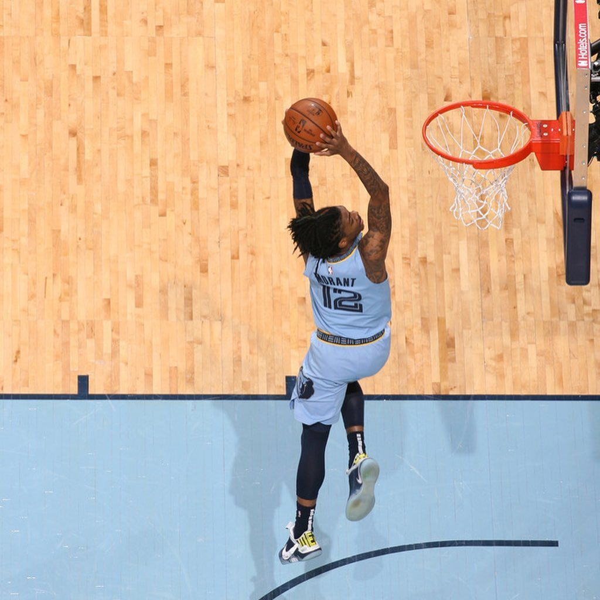
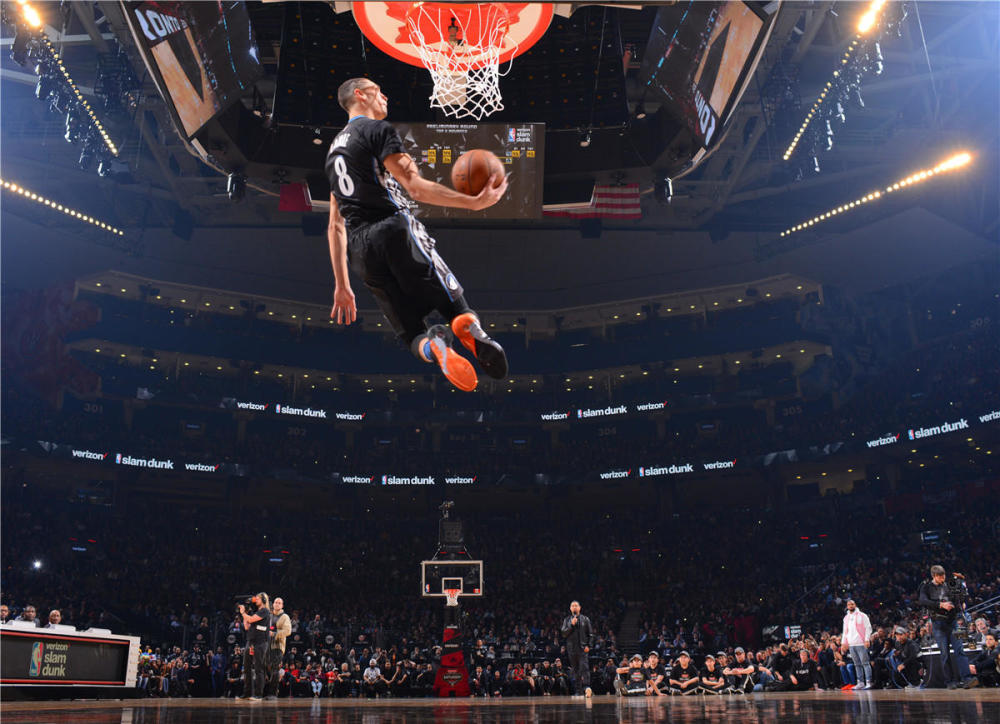

在体育迷们的眼中，有剧情、有转折的比赛才是真正的满分赛事。2023年NBA全明星扣篮大赛正是这样一场经典之战，伴随着惊人的表演和意想不到的故事情节，深深打动了每一位观众的心。本文将带领大家回顾这一场扣人心弦的比赛，分析关键表现和战术，并展望未来的扣篮大赛趋势。
作为全明星周末的一大看点，扣篮大赛一直以来都是篮球迷最期待的环节之一。这不仅仅是一场展示球员体能和技巧的比赛，更是一场视觉与艺术的盛宴。2023年的扣篮大赛将这一特点发挥得淋漓尽致，每一位选手都在赛场上全力展现自己的创意和才华，留下了一幕幕经典的瞬间。
今年的扣篮大赛聚集了几位极具实力和人气的球员：贾·莫兰特、奥比·托平、扎克·拉文以及首次参赛的新星贾伦·格林。他们的每一记扣篮都饱含着独特的创意和精妙的技术，让观众们目不暇接。在比赛过程中，尤其值得一提的是几次震撼全场的扣篮表演。
贾·莫兰特以其惊人的弹跳力和出色的身体控制力赢得了满堂喝彩。他在首轮比赛中的一次胯下换手暴扣，几乎完美无瑕，从起跳、滞空到最终完成动作，都展示了顶级球员的风采。而奥比·托平则凭借他的创意扣篮，展现了他与众不同的扣篮风格，他模仿了经典的“风车扣篮”，并在空中完成了一次360度转身。
让我们借助详细的数据回顾一下这场扣篮大赛的精彩瞬间。贾·莫兰特以98分的总分成绩领先群雄，他的两次扣篮分别获得了满分50分和48分的高分。奥比·托平紧随其后，总分96分，其中一记扣篮得到47分，另一记获得49分。扎克·拉文和贾伦·格林则以94分和90分的成绩位居第三和第四。
这些数据不仅反映了选手们出色的表现，更展现了扣篮大赛评分的严格和公正。每一次扣篮，裁判们都会从难度、创意、完成度等多个方面进行评分，因此要想在这样高水平的赛事中脱颖而出，选手们必须表现出色。
赛后，篮球专家和球迷们对比赛进行了热烈的讨论。很多人认为，本次扣篮大赛是近年来最精彩的一次，选手们不仅展现了高超的技巧，更通过比赛讲述了一个个精彩的故事。专家们纷纷表示，这样的比赛形式更具观赏性，也将扣篮大赛的水准提升到了新的高度。
社交媒体上，关于比赛的讨论热度居高不下。许多球迷在推特和Instagram上分享了自己最喜欢的扣篮瞬间，并表达了对选手们的喜爱和敬佩。特别是贾·莫兰特的表现，更是赢得了无数粉丝的欢呼和支持。